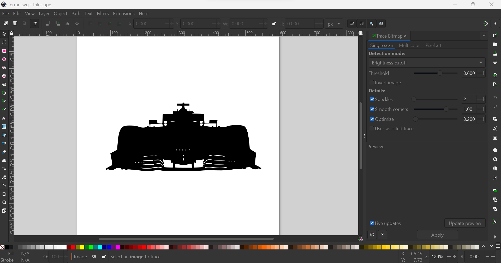
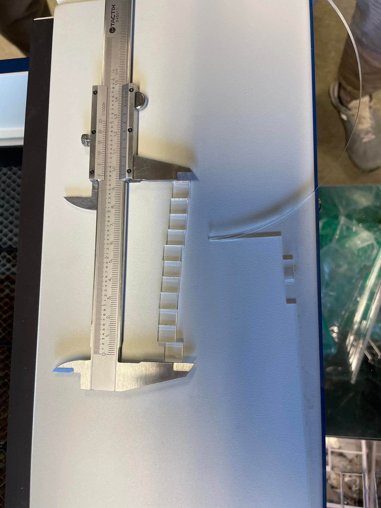
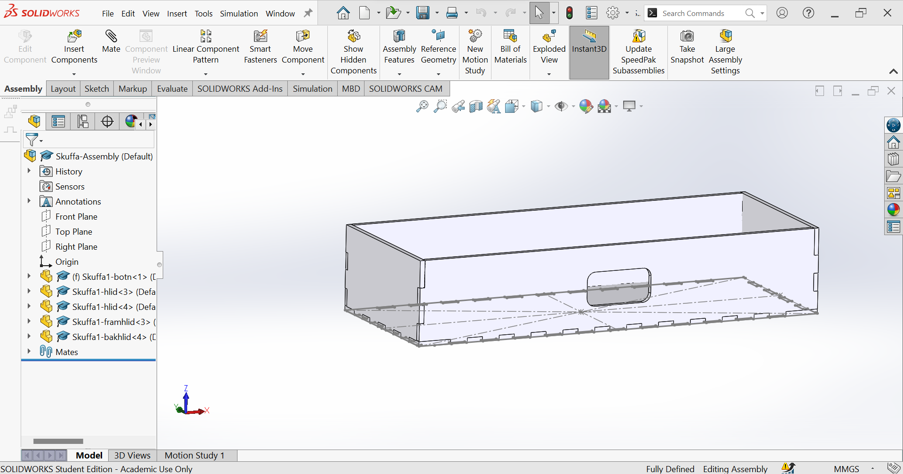
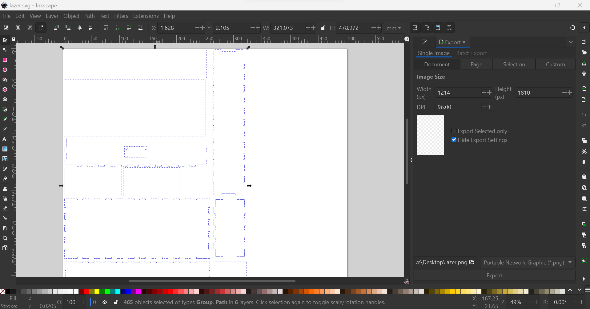
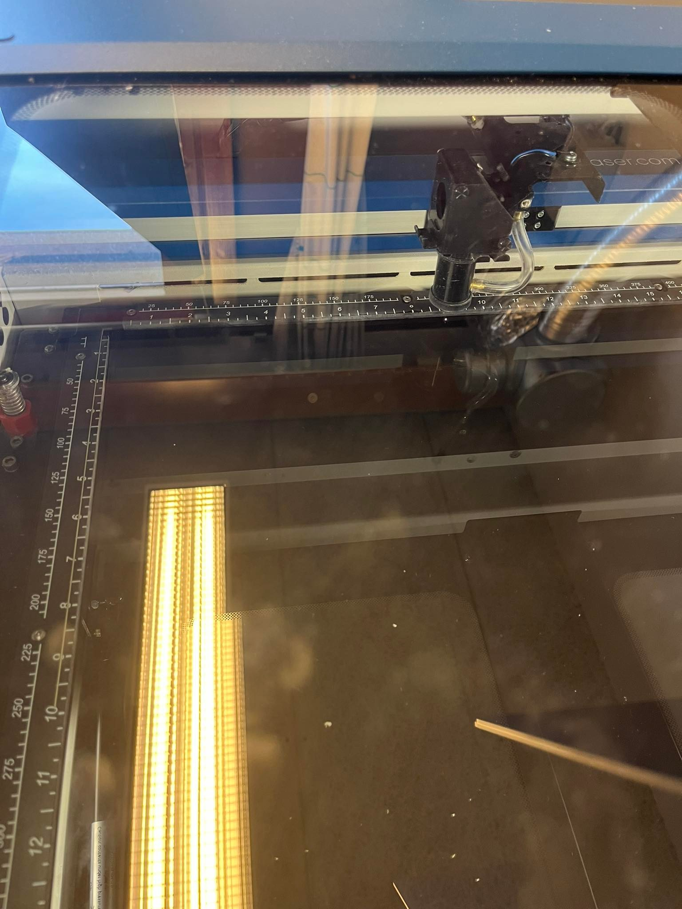

Tölvustuddur skurður
Þetta verkefni er skipt í tvo hluta. Að nota vinylskerarann og lazerskerarann.
Vinyl
Ég fann mynd á google af Ferrari Formula 1 bíl og setti inn á inkscape. Fyrst breytti ég myndinni þannig hún væri svört með því að fara í Path>Bitmap Trace og breytti threshold í 0.600.
Síðan færði ég myndina yfir á tölvu sem var tengd vinylskerarann og frá þaðan breytti ég mydninni í .pdf skrá. Hafliði hjálpaði mér að stilla vinylskerarann sjálfann með því að stilla hjólin og herða þannig vinylinn yrði kjur. Loks var allt tilbúið að tími til að prenta. Þetta var loka niðurstaðan

Kerf prufa
Til að ákvarða hversu mikið kerf sem laserskerarinn þurfti að gera prufu. Ég gerði prufuna með Aron Beck og Tómas Inga. Til þess að ákvarða kerfið skárum við tíu kass og mældum lengdina á kössunum og svo holuna í plastinu sem kassarnir voru skornir úr.
Lengd holunar var 9.9mm og samanlögð lengd kassana var 9.69mm. Þá fengum við að kerfið okkar væri (9.9-9.69)/11=0.019mm en ég námunda það í 0.020mm
3D hönnun
Ég ákvað að lazerskera skrifstofuskúffu fyrir litlu verkfærin mín. Ég byrjaði á því að mæla hvað lengsta verkfærið, sem er skífumálið mitt, og notaði það sem grunn á hversu stór skúffan ætti að vera. Ég endaði á því að hafa hana 250mm á lengd, 100mm á breidd og 50mm á hæð og hliðraði svo allar hliðar um 0.020mm.
Til þess að gera parametríska hönnun fór ég eftir þessu myndbandi.
Inkscape
Eftir ég var búinn að teikna upp allarhliðarnar á skúffunni breyti ég þeim í .dxf skrá og færði yfir á inkscape þar sem ég raðaði upp öllum hliðunum á skúffunni. Svo breytti ég línu þykktinni í 0.02 og breytti pappírsstærðinni í 500mmx500mm með því að fara í File => Document Properties.
Lazerskurður
Efnið sem ég valdi mér var 3mmx500mmx500mm svart akríl plast. Í lazerskeranum sjálfum þurfti ég að staðsetja teikninguna frá inkscape. Svo í stillingunum setti ég á autofocus og 20% speed, 100% power, 100% frequency og 3mm þykkt. Eftir það var þurfti ég að opna fyrir vaccum lokanum og ýta á play takkann.
Klúður
Eftir lazerskurðinn komst ég að því að sumstaðar gat ég ekki púslað saman skúffuna, aðalega á framhlið og bakhlið. Þá komst ég að því eftir að kíkja í solidworks hafði ég hliðrar sumstaðar um 0.2mm en það átti að vera 0.02mm. Ég hefði getað forðast þennan hausverk með því að gera prufu með lazerskerarann sem ég hef til hugar í framtíðinni. En þetta var auðveldlega lagað með því að þjala þær hliðar aðeins niður.
Niðurstöður
Þetta eru niðurstöðurnar.

| Verkefnihluti | Skýring | Tími |
|---|---|---|
| Vinyl | Finna mynd, laga mynd í inkscape og prentun | 1 klst. |
| Kerf prufa | Finna lengd á kerf | 0.5 klst. |
| 3D hönnun | Hönnun og teikning af skúffunni | 6 klst. |
| Lazerskurður | Uppsetning í inkscape og lazerskurður | 1 klst. |
| Skrásetning | Skrásetning á vefsíðu | 5 klst. |
| 13.5 klst. |